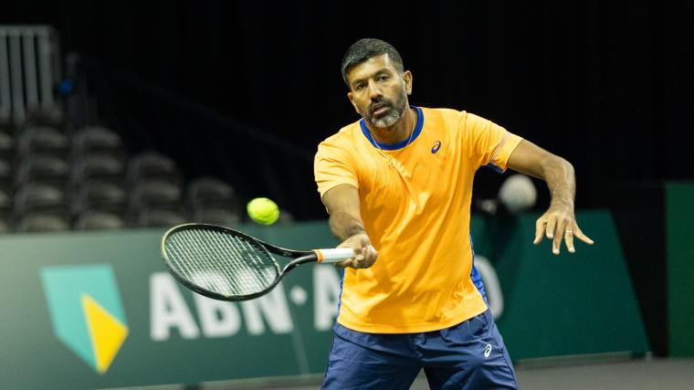
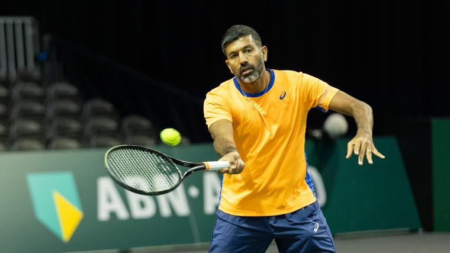

Tournaments
In tennis there are 5 different types of events that are played throughout the year . They include 125's , 250's , 500's , 1,000's , and grand slams . These tournaments determine the total amount of points that the winner can earn . At grand slams players can earn between 250 to 2,000 points if they win a tournament .
January 14 - January 28, 2024
Australian Open :Melbourne, Australia: Jan 14 - Jan 28, 2024

After winning the Australian Open last year, coming from a set down, Sabalenka is indeed a fighter. Twelve months on, Sabalenka did not need to come back from the brink of anything. The defending champion did not drop a set in the tournament. Only one player, Coco Gauff, was able to win more than three games in a set.
In 2022, Zheng was named the WTA Newcomer of the Year. Last year, she received 2023's Most Improved Player accolade. And now she is already a Grand Slam finalist and a newly minted Top 10 player in 2024. Zheng fell one match short of her Grand Slam dream, but there is no reason to believe her rise won't continue.
Yastremska barely missed direct entry into the main draw and had to grit out a trio of three-set wins as the No.1 seed in qualifying. Once Yastreska was in the main draw,she beat reigning Wimbledon champion Marketa Vondrousova in the first round and went all the way into her first major semifinal.
This time last year, Noskova made the Adelaide final but lost in the first round of Australian Open qualifying. Twelve months later, in her Australian Open main-draw debut, Noskova shocked World No.1 Iga Swiatek on the way to her first Grand Slam quarterfinal.
Despite winning her first WTA singles title last year, Timofeeva had never faced a Top 50 player coming into Melbourne. After beating former champion Caroline Wozniacki in the second round, Timofeeva finally faced Top 50 opposition and beat No.10 seed Beatriz Haddad Maia to make the Round of 16.
Hsieh Su-Wei won the first Grand Slam mixed doubles title of her career with Jan Zielinski. Additionally, she won her seventh career Grand Slam women's doubles title alongside Elise Mertens, improving the numbers on both of their resumes.
 At an early age, Sinner remembers taking lengthy walks to visit his parents at work. His father was the chef at the Talschlusshutte restaurant in Sesto-Val-Fiscalina, located in the mountains of northeast Italy. His mother, Siglinde, was a server there.
Sinner's mother would help his grandparents clean and maintain apartments his family owned. They were blue-collar workers who demonstrated a work ethic that carried down to Jannik.
When Sinner needed to choose between skiing and tennis, he picked the latter despite his early success in the former. Skiing created a high-pressure environment in which one mistake would put all his hard work to waste and a run would be over within a couple of minutes. In tennis there is just as much pressure if not more, but he had the chance to learn and adjust. He simply enjoyed tennis more.
Aged 14, Sinner moved away from home to train under the tutelage of renowned coach Riccardo Piatti, one of the most well-known teachers in the world.
The Italian never broke into the Top 100 of the junior rankings. Instead, it was all about the process of building his game for the long run.
In 2018, Sinner began playing professional tournaments and that September, just after turning 17, he entered qualifying at an ATP Challenger Tour event in Biella as the World No. 878. It was there that Sinner trained with Italian standout Paolo Lorenzi for the first time.
A former No. 33 player in the world who now works for the Italian federation, Lorenzi was the third seed that week. After Sinner lost in the first round of qualifying, he remained in town with coach Andrea Volpini, a Piatti deputy, who knew Lorenzi and asked if he could practise with his young charge.
The following January, instead of competing in the Australian Open boys' singles event — he never played a Grand Slam junior tournament — Sinner was playing on the ITF World Tennis Tour in Tunisia, where he lost in the first round. He had not yet cracked the Top 500 in the Pepperstone ATP Rankings.
One month later, he won his first ATP Challenger Tour event in Bergamo. Two months after that he claimed his maiden tour-level match win in Budapest and in May, he made his ATP Masters 1000 debut on home soil in Rome against American veteran Steve Johnson, who was less than a year removed from being inside the world's Top 30. Sinner rallied for a 1-6, 6-1, 7-5 victory.
At Wimbledon that year, Sinner made his Grand Slam qualifying debut, losing 12-10 in a deciding set to Australian Alex Bolt. As tough a defeat as that was, he went straight back to work. Instead of competing for several weeks in the comfort of Europe, Sinner left his comfort zone and played three consecutive Challengers in the United States to harness his hard-court game, thinking of his long-term progress.
At the US Open, Sinner qualified for a major for the first time. Having just turned 18, he was not yet a household name. The Italian sat inside a small interview cubicle at Flushing Meadows for several minutes before reporters realised he was there. That might have annoyed some top prospects, but Sinner never has viewed himself as better than anyone around him. He waited patiently with Piatti's wife, Gaia Piatti, and remained for an extended period of time to tell a handful of journalists his story.
During that stretch he earned two singles victories against World No. 1 Novak Djokovic and three wins against former World No. 1 Daniil Medvedev. Sinner beat them in back-to-back matches in Melbourne to lift his first Grand Slam trophy at the Australian Open.
Medvedev won the first two sets in Sunday's final. But while in skiing, Sinner's chances would have evaporated, he had enough time to problem-solve, raise his level and surge to a memorable 3-6, 3-6, 6-4, 6-4, 6-3 victory.
At just 22 years old, Sinner is nearing $20 million in prize money and has made plenty more through several blue-chip endorsements. He even has his own logo. An argument can be made that at this moment in time, Sinner is playing better tennis than anyone else on Earth.

Rohan Bopanna on Monday climbed to World No. 1 in the Pepperstone ATP Doubles Rankings for the first time after winning the Australian Open with Matthew Ebden.
Aged 43, Bopanna is the oldest first-time World No. 1 and the third Indian (also Leander Paes and Mahesh Bhupathi, with whom Bopanna won two titles) to accomplish the feat.
In 2016, he celebrated his 36th birthday by launching the Rohan Bopanna Tennis Academy in his home city, Bangalore, India. The academy reflects Bopanna's goal to offer young children in India access to a global standard tennis coaching program.
A memorable moment came in the Melbourne first round, when Bopanna collected his 500th tour-level win. The 24-time tour-level titlist has won five ATP Masters 1000 trophies, each with different partners (Aisam-ul-Haq Qureshi, Bhupathi, Florin Mergea, Pablo Cuevas and Ebden).
He entered the season's first major tied at his career-high No. 3, a mark he previously hit in 2013. In the quarter-final round, Bopanna and Ebden defeated Maximo Gonzalez and Andres Molteni, securing the Indian's rise to World No. 1, a journey that has come with obstacles.
One challenge that Bopanna faces is competing with no cartilage in his knees. However, Bopanna has displayed resilience to maintain a high level and at last year's US Open, he became the oldest Grand Slam doubles finalist in the Open Era.
Both of Bopannas knees have no cartilage and in 2019 I was on two, three painkillers a day.
When the ATP Tour was suspended in 2020 due to the Covid-19 pandemic, Bopanna took advantage of five months away from competition to get his body in peak shape. Bopanna walked to 90-minute iyengar yoga sessions four times a week.
"That actually made a huge, huge difference," Bopanna said. "A lot of people talk about how they are benefiting from yoga. I personally say that has made a huge difference. I tried a lot of different methods for my knees. Unfortunately it was not working.
"I think yoga in a way not only strengthened my legs, my body, but also I think made me calmer on the tennis court. It kind of really helped me focus a lot better. I don't feel rushed on the tennis court. I think clearly there. I think that in a big way has made that change."
Bopanna has enjoyed a successful partnership with Ebden, which began at the start of the 2023 season. They qualified for the prestigious Nitto ATP Finals in their first year as a team, marking Bopanna's fourth appearance at the year-end event and Ebden's maiden trip.
"In hindsight it would have been amazing if we would have played for a long period of time, but still, we are enjoying where we are today, and I think there are no real complaints on that," Bopanna said. "You grow as a team. I think we have also learned from each other, what works for us, what our strengths are, and how we can improve."
Bopanna and Ebden each hold the same number of Pepperstone ATP Doubles Rankings points, but the Indian holds the top spot because he has played three fewer tournaments to earn those points. Ebden congratulated his partner on the achievement.
"It was a big goal of ours when we started this partnership over a year ago and we talked about it," Ebden said. "We made our intentions clear, 'I want to get to World No. 1, win the Slams, the big tournaments.' We have ticked a lot of boxes the last year and this is another one of those. A huge milestone. It's an incredible thing for Bops, especially at his age."
At an early age, Sinner remembers taking lengthy walks to visit his parents at work. His father was the chef at the Talschlusshutte restaurant in Sesto-Val-Fiscalina, located in the mountains of northeast Italy. His mother, Siglinde, was a server there.
Sinner's mother would help his grandparents clean and maintain apartments his family owned. They were blue-collar workers who demonstrated a work ethic that carried down to Jannik.
When Sinner needed to choose between skiing and tennis, he picked the latter despite his early success in the former. Skiing created a high-pressure environment in which one mistake would put all his hard work to waste and a run would be over within a couple of minutes. In tennis there is just as much pressure if not more, but he had the chance to learn and adjust. He simply enjoyed tennis more.
Aged 14, Sinner moved away from home to train under the tutelage of renowned coach Riccardo Piatti, one of the most well-known teachers in the world.
The Italian never broke into the Top 100 of the junior rankings. Instead, it was all about the process of building his game for the long run.
In 2018, Sinner began playing professional tournaments and that September, just after turning 17, he entered qualifying at an ATP Challenger Tour event in Biella as the World No. 878. It was there that Sinner trained with Italian standout Paolo Lorenzi for the first time.
A former No. 33 player in the world who now works for the Italian federation, Lorenzi was the third seed that week. After Sinner lost in the first round of qualifying, he remained in town with coach Andrea Volpini, a Piatti deputy, who knew Lorenzi and asked if he could practise with his young charge.
The following January, instead of competing in the Australian Open boys' singles event — he never played a Grand Slam junior tournament — Sinner was playing on the ITF World Tennis Tour in Tunisia, where he lost in the first round. He had not yet cracked the Top 500 in the Pepperstone ATP Rankings.
One month later, he won his first ATP Challenger Tour event in Bergamo. Two months after that he claimed his maiden tour-level match win in Budapest and in May, he made his ATP Masters 1000 debut on home soil in Rome against American veteran Steve Johnson, who was less than a year removed from being inside the world's Top 30. Sinner rallied for a 1-6, 6-1, 7-5 victory.
At Wimbledon that year, Sinner made his Grand Slam qualifying debut, losing 12-10 in a deciding set to Australian Alex Bolt. As tough a defeat as that was, he went straight back to work. Instead of competing for several weeks in the comfort of Europe, Sinner left his comfort zone and played three consecutive Challengers in the United States to harness his hard-court game, thinking of his long-term progress.
At the US Open, Sinner qualified for a major for the first time. Having just turned 18, he was not yet a household name. The Italian sat inside a small interview cubicle at Flushing Meadows for several minutes before reporters realised he was there. That might have annoyed some top prospects, but Sinner never has viewed himself as better than anyone around him. He waited patiently with Piatti's wife, Gaia Piatti, and remained for an extended period of time to tell a handful of journalists his story.
During that stretch he earned two singles victories against World No. 1 Novak Djokovic and three wins against former World No. 1 Daniil Medvedev. Sinner beat them in back-to-back matches in Melbourne to lift his first Grand Slam trophy at the Australian Open.
Medvedev won the first two sets in Sunday's final. But while in skiing, Sinner's chances would have evaporated, he had enough time to problem-solve, raise his level and surge to a memorable 3-6, 3-6, 6-4, 6-4, 6-3 victory.
At just 22 years old, Sinner is nearing $20 million in prize money and has made plenty more through several blue-chip endorsements. He even has his own logo. An argument can be made that at this moment in time, Sinner is playing better tennis than anyone else on Earth.

Rohan Bopanna on Monday climbed to World No. 1 in the Pepperstone ATP Doubles Rankings for the first time after winning the Australian Open with Matthew Ebden.
Aged 43, Bopanna is the oldest first-time World No. 1 and the third Indian (also Leander Paes and Mahesh Bhupathi, with whom Bopanna won two titles) to accomplish the feat.
In 2016, he celebrated his 36th birthday by launching the Rohan Bopanna Tennis Academy in his home city, Bangalore, India. The academy reflects Bopanna's goal to offer young children in India access to a global standard tennis coaching program.
A memorable moment came in the Melbourne first round, when Bopanna collected his 500th tour-level win. The 24-time tour-level titlist has won five ATP Masters 1000 trophies, each with different partners (Aisam-ul-Haq Qureshi, Bhupathi, Florin Mergea, Pablo Cuevas and Ebden).
He entered the season's first major tied at his career-high No. 3, a mark he previously hit in 2013. In the quarter-final round, Bopanna and Ebden defeated Maximo Gonzalez and Andres Molteni, securing the Indian's rise to World No. 1, a journey that has come with obstacles.
One challenge that Bopanna faces is competing with no cartilage in his knees. However, Bopanna has displayed resilience to maintain a high level and at last year's US Open, he became the oldest Grand Slam doubles finalist in the Open Era.
Both of Bopannas knees have no cartilage and in 2019 I was on two, three painkillers a day.
When the ATP Tour was suspended in 2020 due to the Covid-19 pandemic, Bopanna took advantage of five months away from competition to get his body in peak shape. Bopanna walked to 90-minute iyengar yoga sessions four times a week.
"That actually made a huge, huge difference," Bopanna said. "A lot of people talk about how they are benefiting from yoga. I personally say that has made a huge difference. I tried a lot of different methods for my knees. Unfortunately it was not working.
"I think yoga in a way not only strengthened my legs, my body, but also I think made me calmer on the tennis court. It kind of really helped me focus a lot better. I don't feel rushed on the tennis court. I think clearly there. I think that in a big way has made that change."
Bopanna has enjoyed a successful partnership with Ebden, which began at the start of the 2023 season. They qualified for the prestigious Nitto ATP Finals in their first year as a team, marking Bopanna's fourth appearance at the year-end event and Ebden's maiden trip.
"In hindsight it would have been amazing if we would have played for a long period of time, but still, we are enjoying where we are today, and I think there are no real complaints on that," Bopanna said. "You grow as a team. I think we have also learned from each other, what works for us, what our strengths are, and how we can improve."
Bopanna and Ebden each hold the same number of Pepperstone ATP Doubles Rankings points, but the Indian holds the top spot because he has played three fewer tournaments to earn those points. Ebden congratulated his partner on the achievement.
"It was a big goal of ours when we started this partnership over a year ago and we talked about it," Ebden said. "We made our intentions clear, 'I want to get to World No. 1, win the Slams, the big tournaments.' We have ticked a lot of boxes the last year and this is another one of those. A huge milestone. It's an incredible thing for Bops, especially at his age."